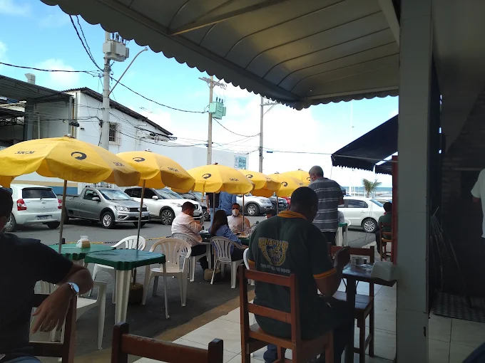
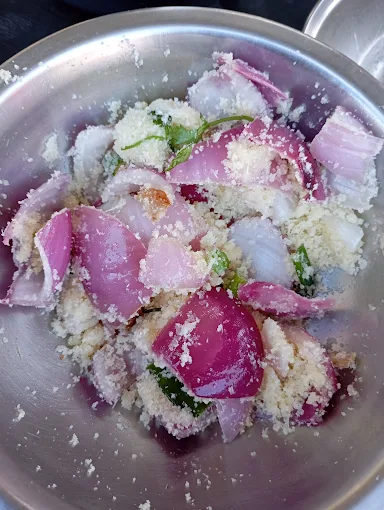

Se você procura frescura, passe longe. Agora, se quer sentir o verdadeiro espírito da orla, o Bar do Nei é o lugar! Nada supera pedir uma bebida, sentar numa cadeira amarela de plástico e sentir aquela mistura poética de maresia com fumaça de motor na calçada. É o charme do caos urbano com a paz do oceano ao fundo. Cerveja trincando e clima nota 10.

A farofa d'água desse lugar deveria vir com aviso do Ministério da Saúde! É tão gostosa, tão bem temperada, que a sensação é de estar comendo o último banquete da vida enquanto sente o infarto vindo a passos lentos. Deliciosa, pesada e inesquecível. Se for para ir dessa para a melhor, que seja comendo essa farofa!